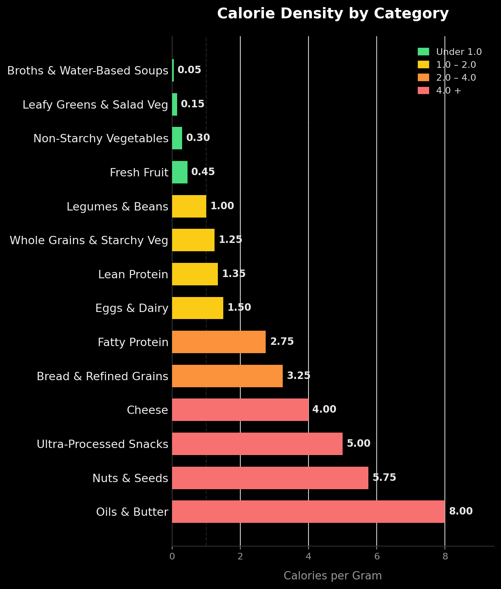
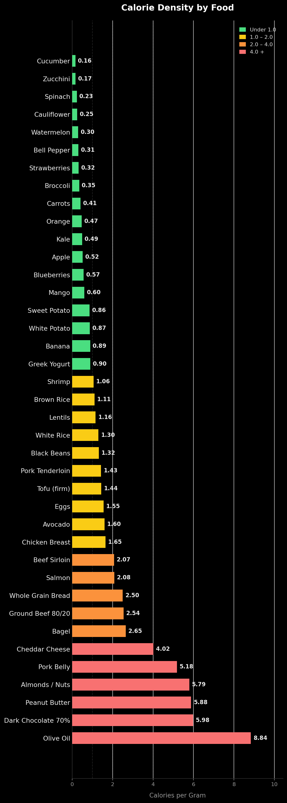
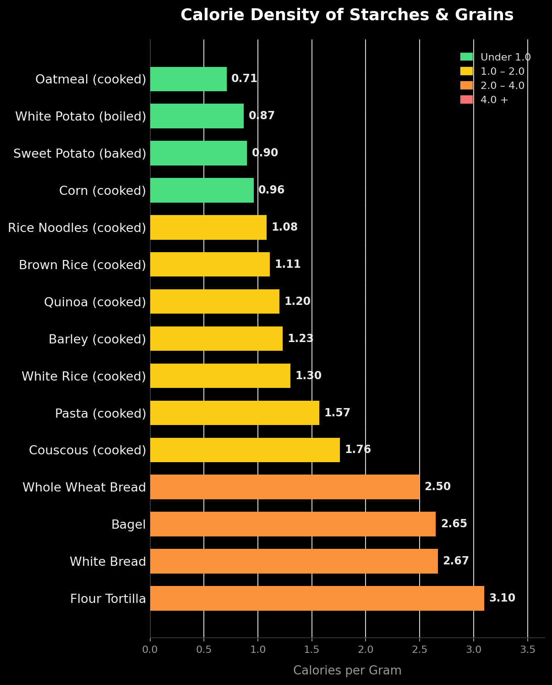
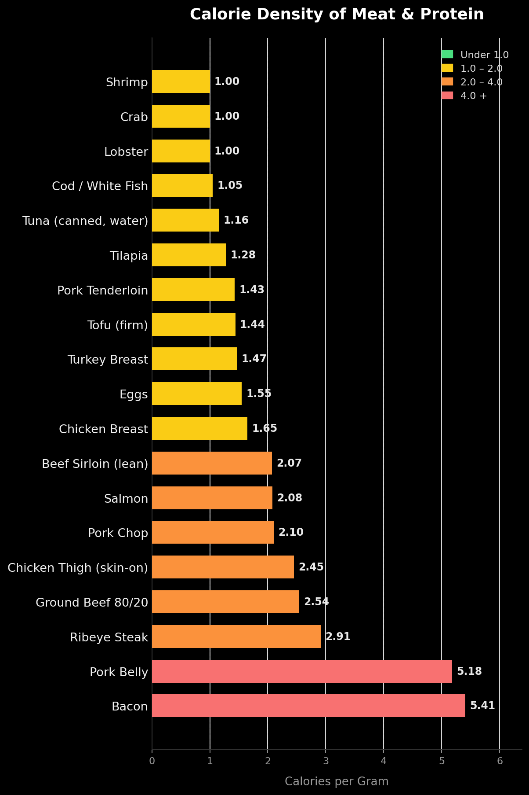
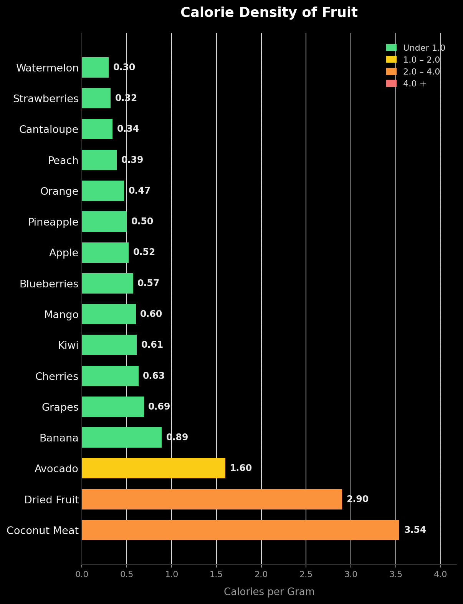

Contents
Jump straight to any section.
The Guide
- Let's Start With What This Is Not
- What This Is — The Simple Idea
- What Is Calorie Density?
- Reading the Label — Calculating It Yourself
- The Plate Rule
- Advice for a Foodie
- Why Short Term Fixes Don't Work
- Protein — The Anchor
- A Note on Carbs — The Nuance Matters
- Don't Drink Your Calories
- A Note on Food and Status
- The Traps — What's Working Against You Without You Knowing
- Practical Tips
- Your First Week — A Loose Guide
- How to Know It's Working
- Beyond Weight Loss — Why This Matters for Your Long Term Health
- The Science Behind This — And Where to Verify It
- The Mindset to Carry Forward
Calorie Density Charts
Sample Meals
Breakfast
Lunch
Dinner
At Restaurants
Eating Well for Life
How to Feel Full, Lose Weight, and Stay Healthy — Without Giving Up the Foods You Love
Most approaches to weight loss ask you to eat less and suffer more. This one asks you to eat more and feel better — and the results are the same.
Let's Start With What This Is Not
You've probably tried something like this before. You found something that worked for a few weeks, maybe a few months, and then it stopped — either because it was too hard to maintain, or life got in the way, or the results reversed the moment you relaxed. If that's your experience, you're not alone and you're not the problem. The approach was.
This is not a restrictive eating plan. Nothing is off limits. Not your favorite foods, not dessert, not a glass of wine, not a meal out. What changes is how you think about proportion, frequency, and what fills most of your plate — not what you're allowed to eat. If you love a particular food, it stays in your life. Full stop.
This is not about eating less. It's about eating more of the right things. If you finish a meal hungry, something is wrong with the meal — not with your willpower. The goal is a full plate, a satisfied stomach, and steady energy. Weight loss happens as a natural consequence of what fills that plate, not as the result of suffering through smaller portions.
This is not a short term fix. It's a way of eating you'll still be doing in five years without thinking about it — because it feels good, keeps you full, and doesn't require constant effort to maintain.
That combination — no restriction, no hunger, no forbidden foods, sustainable results — is what makes this different from everything else you may have tried.
What This Is — The Simple Idea
The whole approach comes down to two sentences.
Eat more of foods that fill you up without loading you with calories. Eat less of foods that load you with calories without filling you up. That's it. Everything else in this guide — the zones, the plate rule, the traps, the tips — is just elaboration on those two sentences.
The reason this isn't obvious is that the food environment works against you. Ultra-processed foods are deliberately engineered to be high in calories and low in fullness — they're designed to keep you eating. Meanwhile the foods that genuinely satisfy — vegetables, legumes, broths, lean proteins — are often underrepresented on menus and in the culture's idea of what a satisfying meal looks like. So the first skill is simply learning to see which foods are which.
Your hunger signals are part of this.
Hunger is not the enemy — it's a signal. And it's one worth learning to read accurately, because most people confuse genuine hunger with other things. A real hunger signal is gradual and physical. It builds slowly and responds to any food. What often gets mistaken for hunger is actually a craving (specific, mental, often triggered by seeing or smelling something), habit (it's a certain time of day so the brain expects food), boredom, or thirst. The distinction matters because genuine hunger is worth responding to immediately — that's the overhungry trap, and it always wins. But cravings, boredom, and habit can be noticed, named, and handled differently.
The good news is that this approach makes hunger signals easier to read over time. When meals are high in volume and protein, you stay genuinely full for longer. The desperate, urgent hunger that drives poor decisions becomes less common. Hunger becomes something you notice calmly and address deliberately — rather than something that sneaks up and hijacks your choices.
Start here: eat when you're genuinely hungry, stop when you're satisfied — not stuffed. The rest of the guide shows you exactly what to put on the plate to make that possible.
What Is Calorie Density?
Every food has a different number of calories per gram. That ratio — calorie density — determines how full you get per calorie consumed.
A head of lettuce and a handful of almonds might contain similar calories, but the lettuce weighs many times more. Your stomach responds to volume and weight — so eating the lettuce produces much more fullness for the same calorie cost.
The core insight, backed by research from Penn State nutritionist Barbara Rolls, is that people tend to eat a similar weight of food each day regardless of how many calories that food contains. Shift the density down and you eat fewer calories without consciously restricting — because you're still full. You ate a lot. The calories just weren't there in the same quantity.
This is why it doesn't feel like a sacrifice. You're not eating less — you're eating smarter.
The Calorie Density Zones — General Categories
| Category | Cal/gram | Strategy |
|---|---|---|
| Broths & water-based soups | 0.0–0.1 | Eat freely — use to start meals |
| Leafy greens & salad vegetables | 0.1–0.2 | Eat freely — bulk up any meal |
| Non-starchy vegetables | 0.2–0.4 | Eat freely — primary plate filler |
| Fresh fruit | 0.3–0.6 | Eat freely — ideal snack |
| Legumes & beans | 0.8–1.2 | Great anchor — protein and filler in one |
| Lean protein (fish, poultry, tofu) | 1.0–1.7 | Primary protein anchor |
| Whole grains & starchy vegetables | 1.0–1.5 | Moderate — quarter plate |
| Eggs & dairy | 1.0–2.0 | Good anchor — watch portions |
| Fatty protein (red meat, dark poultry) | 2.0–3.5 | Mindful portions |
| Bread, crackers, refined grains | 2.5–4.0 | Easy to overeat — limit |
| Cheese | 3.5–4.5 | Condiment logic |
| Ultra-processed snacks | 4.0–6.0 | Engineered to defeat satiety |
| Nuts & seeds | 5.0–6.5 | Healthy but very dense — small handfuls |
| Oils & butter | 7.0–9.0 | Condiment only |

Calorie Density — Specific Foods
| Food | Cal/gram | Zone | Notes |
|---|---|---|---|
| Cucumber | 0.16 | Eat freely | Great volume food |
| Zucchini | 0.17 | Eat freely | Mild, versatile, almost zero density |
| Spinach | 0.23 | Eat freely | Bulk with near-zero calories |
| Cauliflower | 0.25 | Eat freely | Great low-density substitute for grains |
| Watermelon | 0.30 | Eat freely | Very high water content, very low density |
| Bell pepper | 0.31 | Eat freely | Crunchy, great raw or cooked |
| Strawberries | 0.32 | Eat freely | Best low-density fruit snack |
| Broccoli | 0.35 | Eat freely | High fiber, very filling |
| Carrots | 0.41 | Eat freely | Great snack, high fiber |
| Orange | 0.47 | Eat freely | Eat it — don't drink it |
| Kale | 0.49 | Eat freely | Nutrient-dense, very low density |
| Apple | 0.52 | Eat freely | Fiber slows digestion |
| Blueberries | 0.57 | Eat freely | Antioxidant-rich, low density |
| Mango | 0.60 | Eat freely | Higher sugar than most fruit — still good |
| Sweet potato (cooked) | 0.86 | Low | Filling, nutritious starch option |
| Banana | 0.89 | Low | Higher than most fruit, still fine |
| Greek yogurt | 0.90 | Moderate | High protein, useful as snack |
| Shrimp | 1.06 | Moderate | Very high protein, very low density |
| Brown rice (cooked) | 1.11 | Moderate | Slightly better than white, more fiber |
| Lentils | 1.16 | Moderate | Best overall calorie density and protein combo |
| White rice (cooked) | 1.30 | Moderate | Fine in modest portions — quarter plate |
| Black beans | 1.32 | Moderate | Excellent — protein, fiber, and low density |
| Pork tenderloin | 1.43 | Moderate | Leaner cut — reasonable anchor |
| Tofu (firm) | 1.44 | Moderate | Great plant protein anchor |
| Eggs | 1.55 | Moderate | Satiating, versatile anchor |
| Avocado | 1.60 | Moderate | Healthy fats but dense — use as accent not base |
| Chicken breast | 1.65 | Moderate | Primary lean protein anchor |
| Beef sirloin | 2.07 | Mindful | Good protein, moderate density |
| Salmon | 2.08 | Mindful | Higher fat but very nutrient-dense — worth it |
| Whole grain bread | 2.50 | Mindful | Low satiety relative to calories |
| Ground beef 80/20 | 2.54 | Mindful | Fat content drives density up |
| Cheddar cheese | 4.02 | Condiment | Use for flavor in small amounts |
| Pork belly | 5.18 | Condiment | Very dense — small portions |
| Almonds / nuts | 5.79 | Condiment | Healthy but very easy to overeat |
| Peanut butter | 5.88 | Condiment | Measure before eating — never eat from the jar |
| Dark chocolate 70% | 5.98 | Condiment | First-few-bites rule applies here |
| Olive oil | 8.84 | Condiment | Tiny amounts go a long way |

Reading the Label — Calculating It Yourself
The tables can't list every food. But you can work out the calorie density of anything with a nutrition label in about five seconds.
The formula is simple:
Calories per serving ÷ grams per serving = calorie density (calories per gram)
Both numbers are right there on the label. Find the calories per serving, find the serving size in grams, divide the first by the second. That's the number. Then place it on the scale you already know — under 0.7 is eat-freely territory, around 1–1.7 is moderate, above 4 is condiment-only.
A quick example: a label says 230 calories per serving, serving size 50 grams. 230 ÷ 50 = 4.6 calories per gram. That's deep in the condiment zone — a dense food, regardless of what the front of the package claims.
The deeper point — if it has a label at all, be a little cautious.
Nutrition labels exist on packaged, processed food. That's what labels are for. And here's the pattern worth noticing: the foods that genuinely need a label to evaluate are very often the ones to be cautious about — and the foods with no label at all are very often the best ones.
Broccoli doesn't have a nutrition label. Neither does an apple, a sweet potato, a piece of fresh fish, a bag of dried lentils, an onion. The whole "eat freely" zone is mostly unlabeled food. Meanwhile the crackers, the granola bars, the chips, the frozen entrées — the things that come with a detailed label and a marketing claim on the front — are disproportionately the dense, easy-to-overeat foods.
So the label calculation is a genuinely useful tool when you're standing in a store holding a packaged product. But the bigger signal is the label's mere existence. A cart full of food that needs no labels is usually a cart full of the right things.
The Plate Rule
This single visual habit does most of the work — no counting, no tracking, no measuring.
Every meal, look at your plate:
- Half the plate — vegetables, salad, or broth-based items; fruit is welcome here too, though vegetables first since they're lower density
- Quarter plate — protein anchor (see next section)
- Quarter plate — starch or whole grain
A plate that's half greens and salad is ideal. A plate that mixes greens with some fresh fruit is completely fine. The goal is volume from low-density whole foods — and fruit qualifies. Apply this at home first, where you control portions, then at restaurants. It naturally shifts calorie density down, ensures protein is present, and keeps starch in proportion — all without a single number.
Advice for a Foodie
If food is part of who you are — if you love to eat, love meat, grew up in a family where the table was the center of everything — this section is for you specifically.
Nobody is asking you to give up meat. Nobody is asking you to give up your favorite foods, your family traditions, or the things that make eating meaningful to you. If that were the ask, this wouldn't be worth reading. Your love of food is not a problem to fix — it's actually an advantage, because people who genuinely care about what they eat respond to better food, not just more food.
Quality over quantity — a foodie already knows this. Any serious food lover already understands this intuitively — the first few bites of something exceptional deliver far more pleasure than the last few. A smaller portion of something genuinely great is more satisfying than a large portion of something mediocre. The goal isn't less enjoyment. It's more intentional enjoyment. Redirecting that food love toward quality rather than quantity is a shift that elevates the eating experience rather than diminishing it.
Explore the cuts that work with you. Not all meat is equal. Pork tenderloin at 1.43 cal/gram is a completely different proposition to pork belly at 5.18. Sirloin vs ground beef. Chicken breast vs thigh. The tables above make this visible. A food lover who cares about meat can redirect that passion toward cuts that are often more interesting culinarily anyway — a perfectly cooked pork tenderloin with a herb crust, a beautiful piece of salmon, a well-seasoned sirloin. Leaner cuts prepared with care are frequently the better meal.
Meat as the star of fewer dishes, not every dish. Rather than meat at every meal, make it the centerpiece of one genuinely celebrated meal. The other meals become the supporting cast — which actually elevates the meat meals rather than diminishing them. A food lover understands the difference between eating well and eating abundantly. This is eating well.
Meat as flavor — the way great chefs actually cook. Professional kitchens and traditional food cultures have always used meat this way. French cuisine, Italian cuisine, Chinese cuisine — meat is used sparingly and strategically to build flavor, not as the bulk of the plate. A small amount of guanciale in a pasta. A few slices of duck breast over a salad. A spoonful of rendered chorizo fat flavoring a vegetable dish. This isn't a concession — it's actually cooking at a higher level. Using meat as the most powerful flavor tool in the kitchen rather than the main ingredient is a more sophisticated approach to food, not a lesser one.
Bone broths, braising, and slow cooking. These are deeply meat-forward techniques that extract maximum flavor from smaller quantities. A braise uses a modest amount of tougher cut to create a profoundly flavorful dish where the liquid becomes the star. Bone broth is essentially pure concentrated meat flavor at near-zero calories. These techniques intensify the meat experience while reducing the quantity needed — which is exactly the direction this approach points.
Your food culture at its best was never about quantity. The slow Sunday roast, the celebratory meal, the grandmother's recipe — none of those were about piling up as much meat as possible. They were about occasion, connection, craft, and love. That can stay exactly as it is. The problem has never been the food culture itself. It's the everyday habits that got normalized alongside it — the meat-heavy Tuesday dinner that nobody is really celebrating, the takeout that happens by default. The special stays special. The everyday just gets smarter.
Loving meat and eating well are not in conflict. The question is never whether to eat meat — it's how to make it count more, not less. A smaller portion of something genuinely special, surrounded by food that's been cooked with the same care, is a better meal than a large portion of something ordinary. That's not a sacrifice. That's just eating well.
Why Short Term Fixes Don't Work
Understanding why quick fixes fail is the most important thing you can do before starting something that actually works.
The appeal of a short term fix is obvious. A clear set of rules, a defined period, a promised outcome. The problem is structural — these approaches are designed in ways that guarantee failure.
The restriction-rebound cycle. Aggressive calorie restriction triggers biological survival responses. Metabolism slows, hunger hormones spike, and the body actively fights the deficit. You lose weight initially, restriction becomes harder to sustain, and when you stop — the body, now primed to store — rebounds. Most people end up heavier than when they started. This is not a willpower failure. It's physiology doing exactly what it evolved to do.
Muscle loss. Crash approaches that don't prioritize protein cause the body to break down muscle alongside fat. Less muscle means a slower resting metabolism, making future weight management harder. You end up lighter but metabolically worse off.
The psychological debt. Restriction creates a ledger of deprivation. People endure it as temporary punishment toward a goal, then reward themselves when it ends. The finish line mentality guarantees the weight comes back because nothing about the underlying habits changed.
The willpower depletion trap. Approaches that require constant resistance draw down a finite resource. Willpower fatigue is real — people make worse food choices later in the day precisely because they've been resisting all day. A sustainable approach removes decisions rather than demanding more of them.
The identity problem. A short term fix is something you do temporarily. A way of living is something you are. The moment a fix ends, the old identity reasserts itself. If old habits got you here, returning to them returns you to the same place.
"I'll just eat less for a while."
This is probably the most common response to the idea of changing how you eat — and the most understandable one. It feels logical. Eat less, weigh less. Simple.
The problem is that almost everyone has already tried this, often multiple times, and it hasn't worked long term. Not because of a lack of effort or discipline — but because eating less while eating the same foods means being hungry constantly. And hunger, sustained over days and weeks, always wins. The body fights back hormonally, energy drops, cravings intensify, and the restriction eventually breaks. The weight comes back, sometimes more than before, and the experience leaves you feeling like you failed — when actually the approach failed you.
"Eating less" is not a strategy. It's a temporary state that the body is biologically designed to escape. The question isn't how to eat less — it's how to eat in a way where less just happens naturally, without hunger, without suffering, and without a finish line where the old habits return.
That's exactly what this approach does.
A useful question to ask yourself at the start: Am I doing this for an event, or for a life? Event-based motivation evaporates the moment the event passes. Life-based motivation — feeling well, having energy, being healthy for your family — doesn't have an expiration date.
Protein — The Anchor
Calorie density tells you how to fill your plate. Protein tells you what to anchor it to.
Protein is the most satiating macronutrient per calorie — it keeps you fuller longer than equivalent calories from carbohydrates or fat. It also preserves lean muscle during weight loss, which matters because muscle drives your resting metabolism. Without adequate protein, weight loss eats away at muscle alongside fat, leaving you lighter but weaker and metabolically slower.
Think of every meal as having two components:
- The anchor — the protein source, quarter of the plate
- The filler — the high-volume, low-density vegetables and legumes that surround it
Best protein anchors by calorie density: Legumes (lentils, black beans, chickpeas) are the standout choice — simultaneously high in protein, high in fiber, and low in calorie density. They do double duty as both anchor and filler. Shrimp, chicken breast, tofu, eggs, and Greek yogurt are all excellent moderate-density anchors. Salmon and beef are higher density but nutrient-rich enough to be worth including in mindful portions.
A Note on Carbs — The Nuance Matters
"Carbs are bad" is one of the most damaging oversimplifications in popular nutrition.
The low-carb movement correctly identified that refined carbohydrates are a major driver of obesity and metabolic disease. But the conclusion got overgeneralized from "refined carbs are problematic" to "all carbs are bad" — and that's where it falls apart.
Whole food carbs are not the problem. Vegetables, legumes, whole grains, and fruit come packaged with fiber, which slows digestion, blunts blood sugar spikes, and feeds gut bacteria. Black beans, lentils, brown rice, sweet potato, oats — these are carbohydrates, and they're central to eating well.
Refined carbs are the actual problem. White bread, pastries, crackers, sugary drinks, and most ultra-processed foods have had fiber stripped out. Digestion accelerates, blood sugar spikes rapidly, and satiety is low relative to calories.
The simple rule: the more a carb looks like it came from the ground, the better. The more processing it went through to reach your plate, the more cautious to be.
The plate rule handles this naturally — a quarter plate of starch means whole grains in modest portions, which is exactly the right relationship with carbohydrates.
Don't Drink Your Calories
This is the single simplest rule in the whole approach — and it removes an entire category of hidden calories in one decision.
Drinks are the easiest place to take in calories without noticing, because liquid calories don't make you full. A 500-calorie meal satisfies you. A 500-calorie drink doesn't — you finish it and you're as hungry as before, except now those calories are spent. Juice, soda, sweetened coffee drinks, bubble tea, alcohol, smoothies — they slip past the body's fullness signals entirely.
So here's the simplifying rule: drinks are not where your calories come from.
- Free, drink freely: water, sparkling water, black coffee, plain or herbal tea
- Treat, not a beverage: juice, soda, sweetened coffee, bubble tea, alcohol, smoothies
This isn't a hard rule you'll be punished for breaking. A glass of wine with dinner, a coffee with friends, a bubble tea with the kids on a hot day — none of that is forbidden, and the all-or-nothing trap doesn't apply here any more than anywhere else. It's a simplifying rule. It takes the hardest-to-track category of calories and removes it from daily life by default, so you don't have to make the decision over and over.
The reason this rule is such good value is that the calories you drink are the easiest calories to cut — because they were never filling you up in the first place. You lose almost nothing by giving them up, and you remove a surprisingly large number of calories from your week. Most other changes in this guide involve a real tradeoff. This one barely does.
One specific note worth repeating: don't drink your fruit. A whole orange is fiber, volume, water, and takes time to eat. Orange juice is the sugar with the fiber stripped out, and it's easy to drink three oranges' worth in thirty seconds without noticing. Whenever there's a choice between the whole fruit and the juice, the whole fruit wins.
A Note on Food and Status
One of the quietest obstacles to eating well is the cultural story we've absorbed about what certain foods say about us.
Without realizing it, most of us carry a hierarchy: steak is celebration, abundance, a sign of doing well. A big plate of meat is a reward. Vegetables are a side dish — supporting cast, never the point. Salad is what you eat when you're punishing yourself. Beans and lentils are budget food, peasant food, what you eat when you can't afford anything better.
These associations are so embedded that people sometimes resist eating patterns not because the food tastes bad — but because of what eating that way feels like it says about them.
Here's the reframe worth sitting with: the food cultures with the longest lives and the best health outcomes eat exactly what Western culture labeled poor people's food. Beans, rice, vegetables, modest amounts of meat, eaten in abundance. The longest-lived communities on earth — in Japan, Sardinia, Greece, Costa Rica — have been eating this way for generations, not because they couldn't afford better, but because it is better.
The status hierarchy got it completely backwards. A plate stacked with meat isn't abundance — it's a calorie density problem. A bowl of lentils with vegetables and herbs isn't poverty — it's the meal that gets people to 90 in good health.
Letting go of those associations isn't just a nice idea. For many people it's the actual obstacle between where they are and where they want to be.
The Traps — What's Working Against You Without You Knowing
None of these feel like traps while you're in them. They all have a completely convincing internal logic in the moment. That's what makes them traps rather than mistakes. Recognizing them by name removes their power.
The Overhungry Trap
Waiting too long to eat is one of the most common reasons people make poor food choices — and it has nothing to do with willpower.
When you get too hungry, cortisol and ghrelin (the hunger hormone) spike. At that point the brain's reward system genuinely overrides rational food choice. You stop choosing what you planned to eat and start choosing whatever will deliver fast reward — fat, sugar, and salt. It's neurochemistry, not weakness.
The pattern looks like this: skipping a meal → powering through hunger → arriving ravenous → eating fast, eating dense, eating more than intended → feeling guilty → restricting the next day → repeat.
The fix is prevention. A low-density snack buffer — fruit, raw vegetables, a cup of broth — in the window before you historically get overhungry prevents the spike before it happens. Eating this way, done well, means you're never hungry enough for that override to kick in.
The Healthy Halo Trap
Eating more of something because it's labeled healthy is one of the most common ways good intentions go sideways.
Granola, açaí bowls, trail mix, whole grain crackers, smoothies — all marketed as health foods but often extremely calorie dense. The label gives unconscious permission for larger portions. The food isn't the problem; the portion enabled by the halo is.
The Liquid Calories Trap
Drinks don't trigger the same satiety signals as food, so the brain dramatically undercounts them.
Juices, lattes, sports drinks, smoothies, alcohol — they add up fast and the brain essentially doesn't register them as eating. You can drink 500 calories and feel no fuller than before. The same 500 calories as food would have genuinely satisfied you.
Bubble tea is the most extreme example worth knowing about. A large milk tea with tapioca pearls typically runs 500 to 800 calories — with 60 to 90 grams of sugar, and sometimes a full day's worth of saturated fat. That's a meal's worth of calories in a cup, and it leaves you no fuller than before you drank it.
It's deceptive in a specific way. Bubble tea looks light — it's mostly liquid and ice by weight, so by the numbers it can seem low density. That's a statistical illusion. The water and ice inflate the weight, but every one of those calories is still there, and none of the fullness is. The tapioca pearls make it worse — they're balls of starch cooked in sugar syrup sitting at the bottom of the cup, and they don't register as "food" the way a plate of rice would.
If bubble tea is part of life — and it often is — the harm-reduction moves are real: most shops let you set the sugar level (ordering 25–50% instead of 100% cuts a lot), skipping the pearls and foam removes a big chunk, and a smaller size scales everything down. But the cleanest approach is the one in the next section.
The Americanization Trap
Many Asian dishes that appear healthy have been significantly altered for the American market in ways that dramatically increase calorie density.
Traditional pho is mostly broth — nearly zero calories per gram — with modest amounts of thin-sliced meat, rice noodles, and fresh herbs. American versions flip that ratio: more meat, more noodles, less herb, richer broth. A very different calorie proposition. The same transformation happens across nearly every Asian cuisine:
- Ramen — traditional is light broth with modest toppings. American ramen shops pile on chashu pork, butter, corn, and rich fatty broth. A bowl can easily hit 800–1,200 calories.
- Sushi — traditional nigiri is fish and a small mound of rice. American menus are dominated by rolls loaded with cream cheese, spicy mayo, tempura, and avocado. Simple nigiri is the lower-density choice almost every time.
- Pad Thai — the street version in Thailand is lighter and smaller with a moderate sauce ratio. American portions are often two to three times larger with heavier peanut sauce.
- Chinese food — dishes like General Tso's chicken, orange chicken, and sesame chicken don't exist in China. They're deep-fried protein in sugary sauce, invented for the American market. Authentic Chinese cooking uses meat as a flavoring, not a centerpiece, surrounded by vegetables.
- Korean BBQ — the authentic experience centers around many small banchan (side dishes), mostly vegetable-based, that fill you up alongside modest grilled meat. American Korean BBQ often skips or minimizes banchan and makes meat the entire focus.
The common thread: portion sizes inflate, meat increases, vegetables decrease, frying replaces steaming, sauces get heavier and sweeter.
The practical rule: the closer a dish is to what you'd find in that country, the more likely it aligns with calorie density principles. Ask for sauces on the side, choose steamed over fried, and treat the meat as a supporting player.
The Reward Trap
"I worked out today so I deserve this" rarely works out mathematically.
Exercise consistently burns fewer calories than people think, and reward foods consistently contain more. The psychological logic feels airtight; the numbers almost never support it.
The Weekend Trap
Two days of loosening up can erase five days of progress.
This is especially common in people who feel they're "doing well" during the week. The weekday intention is real; the weekend accounting just doesn't get done. Consistency matters more than any single day's perfection — which leads directly to the next trap.
The Portion Distortion Trap
Eating the right foods but significantly underestimating quantities.
Especially common with moderate-density foods — nuts, olive oil, peanut butter, brown rice, pasta. People measure once, eyeball forever, and the eyeball drifts upward over time. The condiment-sized foods in the table are the main risk area.
The All-or-Nothing Trap
One imperfect meal triggering complete abandonment of the approach.
"I've already blown it" is one of the most costly thoughts in nutrition. There's no off plan here — it's a spectrum, not a rule set. One dense meal doesn't undo anything. The next meal is all that matters.
The Condiment Blindspot
Carefully choosing low-density foods then drowning them in high-density dressings and sauces.
A salad is a perfect calorie density meal until you add several hundred calories of ranch dressing. This is also how restaurant dishes and Americanized versions of Asian food get calorie-loaded — the base is fine, the sauce transforms it. Ask for dressings and sauces on the side and add sparingly.
The Cooking Oil Trap
Oil is the single densest food in existence — and it's invisible once it hits the pan.
At 8.84 cal/gram, oil is denser than butter, denser than nuts, denser than anything else on the table. Because it disappears into cooking, it's one of the easiest ways to add hundreds of calories to an otherwise excellent meal without realizing it. A stir-fry of vegetables and chicken is a great low-density meal. The same stir-fry made with four tablespoons of oil is a very different calorie proposition — and it tastes almost identical.
Use the minimum amount needed, switch to a non-stick pan, or use a light spray instead of a pour. This single habit in the kitchen has an outsized impact on everything you cook at home.
Practical Tips
Getting Started
Don't start by restricting — start by adding. Add a low-density starter to meals you already eat. A bowl of broth, a side salad, or sliced vegetables before your normal meal. Don't change the meal yet — just precede it with volume. This builds the habit without the psychological cost of losing anything.
Prioritize the highest-impact changes first. Not all swaps are equal, and trying to change everything at once leads to nothing changing. Focus on the moves that shift calorie density the most dramatically. Swapping beef for chicken is a much bigger change than swapping white rice for brown rice — the tables make this visible. Start with the swaps that move you across a zone boundary, not the ones that fine-tune within the same zone. Early wins build momentum.
Use substitution, not elimination. For every high-density food you eat regularly, find a lower-density version that satisfies the same craving. You don't give anything up — you replace it with something close enough that the meal still feels familiar. Creamy soup becomes broth-based soup. Ground beef becomes ground turkey or a beef-lentil mix. A heavy pasta sauce gets extended with extra vegetables. The dish stays recognizable; the calorie density quietly drops.
Design meals that become "the usual." A meal you eat automatically requires zero decision-making — and decision elimination is more powerful than decision improvement. A bowl of oatmeal every morning isn't just convenient, it's a system that removes an entire category of choice from a moment when willpower is lowest. Build two or three default meals — one for breakfast, one for a standard lunch — and let everything else be flexible.
Do a kitchen audit. What's visible and accessible determines most of what you eat, especially when tired or distracted. Move high-density snacks out of sight or out of the house. Put fruit on the counter. Pre-cut vegetables and place them at eye level in the fridge. Environment design beats willpower every time.
Identify your personal overhungry window. When do you consistently get too hungry? Mid-afternoon? After dinner? Plan a low-density snack specifically for that window before it happens.
Pick two protein anchors you enjoy and keep them always available. Anchor scarcity leads to poor improvised choices on busy nights.
Daily Habits
Start every meal with the lowest-density item first. Soup or salad before the denser elements. This is a traditional pattern in Japanese, Vietnamese, and French meals — it's not accidental. By the time the denser food arrives, satiety is already building.
Make low-density food delicious. The solution to eating more vegetables isn't discipline — it's flavor. Herbs, spices, citrus, and vinegar add enormous flavor at near-zero calorie cost. Fresh lime on fish or vegetables, a generous handful of fresh herbs, a vinegar-based dressing instead of a creamy one. The goal is food you want to eat, not food you tolerate.
Pre-commit your meals before you're hungry. Deciding what to eat in a moment of hunger is the worst possible time to make that decision. Choosing tomorrow's lunch tonight, or scanning a restaurant menu online before you arrive, moves the decision to a moment of clear thinking. Even a loose plan dramatically outperforms deciding in the moment.
Know the difference between hunger and craving. Real hunger responds to any food — including a plain apple or raw carrots. A craving is specific: it wants something particular, usually high-density. A simple test: if the idea of an apple sounds genuinely unappealing, it's a craving, not hunger. Recognizing the difference lets you respond deliberately rather than reactively.
Use meat as a flavor, not a main course. Reposition meat as a seasoning rather than the centerpiece. A small amount of high-quality beef, pork, or chicken adding flavor to a dish that's mostly vegetables, legumes, and grains is both more satisfying and dramatically lower in calorie density than a plate where meat is the anchor. You're not removing meat — you're using it the way it works best.
Eat slowly. The brain has roughly a 20-minute lag before satiety signals register. Eating fast means consistently overshooting fullness before your body can signal stop. A related practice from Okinawa is hara hachi bu: eating to about 80% fullness and then stopping. The last 20% catches up within minutes. You never feel stuffed, and you never feel deprived.
The first few bites rule. Most of the pleasure from a dessert or indulgent food comes from the first few bites — enjoyment drops measurably after that. You're chasing a diminishing return with each subsequent bite. A small portion eaten slowly and with full attention delivers more pleasure per calorie than a large portion eaten distractedly. Small portions mean getting more, not having less.
Treat high-density foods as condiments, not meals. Olive oil, cheese, nuts, butter, and rich sauces belong on the plate in small amounts — for flavor, not volume.
Default snack is whole fruit or raw vegetables. If having something dense, portion it before you start and never eat from the container.
One meal prep session per week. Pre-cooked protein and pre-cut vegetables removes the friction that drives bad decisions on busy nights. Keep legumes cooked and ready.
Use entrée dilution. Lower the calorie density of meals you already make by adding low-density ingredients invisibly. Extra vegetables stirred into pasta sauce. Pureed cauliflower blended into mashed potato. Spinach folded into scrambled eggs. Ground meat stretched with lentils or finely chopped mushrooms. The dish stays completely recognizable — the family doesn't notice — but the calorie density quietly drops.
At Restaurants
- Scan the menu for the dish closest to its original cultural version
- Be cautious of anything described as crispy, creamy, loaded, smothered, or glazed
- Ask for sauces and dressings on the side — this single habit is high leverage
- Start with broth soup or a plain salad if available
- Apply the plate ratio rule visually to whatever arrives
Your First Week — A Loose Guide
You don't need to change everything at once. You just need to start somewhere that matters.
Days 1–2: Awareness only. Don't change anything yet. Look at your meals and mentally note where the highest-density items are. Look at the tables. Just observe without judgment.
Days 3–4: Add before you subtract. Add one low-density element to your existing meals — a side of vegetables, a bowl of broth before dinner, fruit instead of a packaged snack. Don't remove anything yet.
Days 5–6: Make one high-impact swap. Pick one item from your regular eating that sits in the dense zone and swap it for something in the moderate zone. Beef to chicken. Fried to grilled. A creamy sauce on the side instead of poured over everything.
Day 7: Design your defaults. Pick one breakfast and one lunch that you'll eat on repeat. Simple, low-density, satisfying. These become your "the usual" — the meals you don't have to think about.
By the end of the first week you've built awareness, added volume, made one meaningful swap, and established two automatic meals. That's a genuine foundation, not a dramatic overhaul that collapses by week three.
How to Know It's Working
Don't rely solely on the scale. It fluctuates daily based on water, sodium, and digestion and will mislead you constantly. Use a broader set of signals.
Weekly signals: - Getting overhungry less often — direct indicator the approach is working - Finishing meals satisfied rather than stuffed — satiety is calibrating correctly - Defaulting to better choices without thinking hard — habit formation is progress even before physical changes show up - If you weigh yourself, once per week at the same time — look at the 3–4 week trend, not day to day
Monthly signals: - Clothes fitting differently — often shows up before scale changes - Energy levels stabilizing — fewer afternoon crashes - Hunger patterns becoming predictable — knowing when you'll be hungry and having a plan is a sign the system is working
If progress stalls: - Revisit the traps list honestly — the weekend trap and cooking oil trap are the most common hidden culprits - Check liquid calories — people consistently and significantly underestimate these - Check protein — if you're losing energy or feeling weak, protein is likely too low - Don't restrict further — eat smarter, not less
The plateau of latent potential is real — progress often happens invisibly before it becomes visible. The habits are forming before the results appear. Keep going.
Beyond Weight Loss — Why This Matters for Your Long Term Health
Weight loss is the first thing you'll notice. It isn't the most important benefit.
Energy and physical activity. Whole foods and fiber create steady blood sugar rather than spikes and crashes. The afternoon energy slump most people experience is largely a refined carb and blood sugar story. Eating this way tends to produce more consistent energy throughout the day — and movement and good eating reinforce each other in a positive cycle.
Type 2 diabetes. High-refined-carb, calorie-dense eating drives insulin resistance over time. High-fiber, whole food eating is strongly protective against Type 2 diabetes and in many cases can reverse early-stage insulin resistance.
Heart disease. The foods in the eat-freely zone — vegetables, legumes, fruit, whole grains — are consistently associated with lower cardiovascular risk. Eating this way naturally shifts your habits in a protective direction without needing to think about cholesterol specifically.
Cancer. High fiber intake is associated with reduced colorectal cancer risk. Obesity itself is a risk factor for multiple cancers. Ultra-processed food consumption has emerging associations with several cancer types.
Asthma. Obesity and chronic inflammation — both driven by calorie-dense, processed food eating — are significant triggers for asthma symptoms and severity. An anti-inflammatory way of eating rich in vegetables, fruit, and whole grains has been associated with fewer and less severe asthma episodes. If asthma is part of your life, improving the way you eat is one of the most underutilized tools available.
Gut health. The volume and variety of plant foods feeds a healthy gut microbiome, increasingly linked to immune function, mental health, inflammation, and metabolic health.
Inflammation. Chronic low-grade inflammation underlies most major chronic diseases. Ultra-processed foods, refined carbs, and excess saturated fat promote it. Vegetables, fruits, legumes, and whole grains are anti-inflammatory. This approach almost automatically shifts the inflammatory load downward.
The body simply works better. When you eat well consistently, the body functions the way it's supposed to. Digestion improves. Sleep quality often improves. Skin clears. Joints feel better. Energy stabilizes. Mood evens out. Many of the small persistent problems people accept as normal — the afternoon fog, the sluggish digestion, the low-grade fatigue — aren't inevitable. They're often the body's response to what it's been given. Change the inputs and many of those problems quietly disappear.
The Blue Zones connection. The longest-lived populations on earth — Okinawa in Japan, Sardinia in Italy, Ikaria in Greece, Nicoya in Costa Rica, Loma Linda in California — eat in ways that map almost perfectly onto calorie density principles. Mostly plants, legumes as a staple, modest portions of meat, minimal processed food. They aren't following a plan. It's just how they eat.
The real prize is arriving at 60, 70, 80 with energy, without metabolic disease, and without the chronic conditions that define so many people's later decades. You're not eating this way to lose weight and then stop. You're eating this way because it's simply how healthy humans eat. The weight loss is just the first thing you notice.
The Science Behind This — And Where to Verify It
You don't have to take this guide's word for any of it.
Everything in this approach traces back to peer-reviewed research, mostly going back decades. The framing here is warm and accessible, but the underlying ideas are not invented — they're the consensus that emerges when you read the actual nutrition science rather than the diet industry.
The calorie density framework itself comes from the work of Barbara Rolls, a professor at Penn State who has spent more than 30 years researching how the volume and density of food affects how much we eat. Her book Volumetrics is the direct source of most of what's in this guide. The core finding — that people tend to eat a similar weight of food daily regardless of calorie content, so lowering density lowers intake without conscious restriction — has been replicated repeatedly in controlled studies.
The "first few bites" rule also comes from Rolls — research on sensory-specific satiety going back to the 1980s, showing that pleasure response to a specific food drops measurably after a few bites even while general hunger remains.
The liquid calories trap is supported by extensive research from Richard Mattes at Purdue, among others. The finding that liquid calories don't trigger the same satiety response as solid food is robust.
Why short term diets fail has its strongest evidence in the work of Rudy Leibel and Michael Rosenbaum at Columbia, and Kevin Hall at the NIH. Hall's famous follow-up study of "The Biggest Loser" contestants showed that metabolic rate remained suppressed years after weight loss — direct biological evidence that the body actively fights restriction.
The ultra-processed food findings also come from Kevin Hall. His 2019 study (Cell Metabolism) put participants on matched diets that differed only in processing level. People on the ultra-processed diet ate roughly 500 more calories per day, automatically, without realizing it. One of the most important nutrition studies of the last decade.
The Blue Zones longevity work comes from Dan Buettner in collaboration with academic researchers like Gianni Pes (Sardinia) and Makoto Suzuki (Okinawa). Some of the popular framing has been criticized, but the core dietary observations — plant-forward, legume-heavy, modest meat — are well documented.
The convergence is the point. Many credentialed researchers and writers, coming from completely different angles — satiety science, longevity, traditional cuisines, gut microbiome, cardiovascular disease — all reach broadly the same conclusions about how humans should eat. When many independent investigators converge on the same answer, the answer is probably right.
If you want to read more, three good places to start:
- Barbara Rolls — The Ultimate Volumetrics Diet — the direct source of the calorie density framework. The most evidence-heavy book on this list.
- Michael Pollan — In Defense of Food — the accessible classic. His famous line "Eat food. Not too much. Mostly plants." compresses essentially this entire approach into seven words.
- Dan Buettner — The Blue Zones Solution — the longevity angle, with on-the-ground reporting from the world's longest-lived communities.
If you read those three, you'll have heard the same core message from three completely different voices — which is exactly the point.
The Mindset to Carry Forward
Frame this as adding abundance, not removing pleasure. That framing is everything.
You are not eating less. You are eating more of the right things. The plate looks fuller, not smaller. The meals are satisfying, not austere. Nothing is forbidden — everything is just understood differently.
When a trap kicks in, treat it as information, not failure. These are predictable patterns that anyone falls into. Notice it, name it, and get back to the next meal. One slip changes nothing. A pattern changes everything — which means a single good meal after a bad one is already a recovery.
The goal is simple: reach a point, months from now, where you're no longer thinking about any of this. Where the plate looks right automatically. Where the choices feel natural. Where hunger is something you notice and address rather than something that controls you.
Not discipline. Habit. Not effort. Default.
Compiled from a research conversation exploring calorie density, behavioral nutrition, and sustainable eating — May 2026
Calorie Density Charts
Every food has a number of calories per gram. Lower means more food for fewer calories — you stay full for less. Bars run from lowest density at the top to highest at the bottom. Green is under 1.0, yellow 1.0–2.0, orange 2.0–4.0, red 4.0 and above.
By Category
Specific Foods
Starches & Grains

Meat & Protein

Fruit

Sample Meals
Real Meal Ideas That Fit the Approach — Without Recipes
Not a cookbook. A reference for what meals look like when calorie density is on your side. Adapt freely. Use whatever ingredients you have.
How to Use This
These aren't recipes. They're patterns. Each entry names the type of meal and lists the specific moves that keep it on the right side of calorie density — small choices that, stacked together, change the entire calorie load of the meal without changing what it looks like on the plate.
The general framework that applies to all of them:
- More volume than you think — vegetables and salad take up real space
- Protein anchor at every meal
- Oils, sauces, and dressings are condiments, not ingredients
- Mustard, vinegar, lemon, salsa, herbs, spices — flavor at near-zero calorie cost
- Mayo, ranch, creamy dressings, butter, cream sauces, melted cheese — calories invisibly added
- Whole grains in modest portions, not the centerpiece
- The plate rule applies everywhere — at home, at a restaurant, at a friend's house
Breakfast
Oatmeal with fruit and Greek yogurt
- Rolled oats (not instant), cooked in water rather than milk
- Berries or sliced banana for sweetness instead of brown sugar
- A spoonful of Greek yogurt for protein and creaminess
- Cinnamon for flavor at zero calorie cost
- A small measured sprinkle of nuts if desired — not poured
Veggie scramble or omelet
- Eggs cooked in a non-stick pan with minimal or no oil
- Heavy on vegetables — spinach, peppers, tomato, mushrooms, onion
- Skip cheese, or use a small amount of strong cheese (feta, parmesan) for impact
- Salsa instead of butter on the side
- Whole grain toast dry, or with a thin layer of avocado — not slathered
Greek yogurt bowl
- Plain Greek yogurt, never flavored — flavored versions hide significant sugar
- Berries for sweetness
- A small handful of nuts or seeds for crunch
- Honey only if needed, and only a drizzle
- Skip granola or use a tiny sprinkle — it's very calorie-dense
Smoothie, done thoughtfully
- A full serving of vegetables (spinach, kale) — you won't taste them
- One serving of fruit, not three
- Greek yogurt or protein powder for protein
- Water or unsweetened almond milk as the base, not juice
- Skip peanut butter or use a measured small amount
- A reminder: smoothies fall into the liquid calories trap — eating the whole foods is generally better
Lunch
Big salad with a real protein anchor
- Greens as the base — easily half the bowl
- Vegetables piled on — cucumber, tomato, peppers, carrots, onion
- Real protein: grilled chicken, shrimp, tuna, chickpeas, or hard-boiled egg
- Vinegar-based dressing, on the side — vinaigrette beats creamy
- Small handful of seeds or nuts for crunch if desired
- Skip croutons and cheese, or use sparingly for flavor
Soup-based lunch
- Broth-based soup as the centerpiece — pho, minestrone, chicken and vegetable, lentil
- Avoid cream-based soups (chowder, bisque) — calorie-dense
- A small side of whole grain bread is fine
- Salad alongside if still hungry
- Soup is a near-perfect calorie density food — high volume, low density
Grain bowl
- Base of brown rice, quinoa, or farro — small portion, quarter of the bowl
- Roasted or raw vegetables — half the bowl
- Protein: grilled chicken, beans, tofu, shrimp
- Sauce on the side, used sparingly — lemon juice, soy sauce, salsa, or hummus instead of creamy dressings
- A few slices of avocado as accent, not base
Sandwich, done thoughtfully
- Whole grain bread, two thin slices, not the thickest available
- Lean protein: turkey, chicken breast, tuna (tuna mixed with mustard, not mayo)
- Vegetables loaded on — lettuce, tomato, cucumber, sprouts, onion, pickles
- Mustard or hummus instead of mayo — mayo is one of the densest condiments
- Skip cheese or use one thin slice for flavor
- Avocado in moderation — a quarter, not half
Leftover dinner
- Often the best lunch — pre-portioned, already designed well
- Especially good if you planned dinner around the plate rule
Fresh spring rolls — the healthy variation
- Fresh, never fried. Rice paper wrappers filled with raw vegetables — completely different from deep-fried egg rolls, which are dense and oily
- Load them with lettuce, cucumber, shredded carrot, and a generous amount of fresh herbs (mint, cilantro, Thai basil)
- Lean protein inside: shrimp, tofu, or shredded chicken
- A small amount of vermicelli rice noodles — a light tangle, not a big pile
- The dipping sauce is where the calories hide. A fish-sauce-based nuoc cham (lime, fish sauce, a little sugar, chili) is light and low density. Peanut sauce is calorie-dense — use a small amount as an accent, not a pool
- High volume, fresh, low density, genuinely satisfying — one of the best light meals there is
Dinner
Sheet pan dinner
- Half the pan: vegetables (broccoli, peppers, zucchini, onion, carrots, brussels sprouts)
- Quarter: lean protein (chicken breast, shrimp, fish, tofu)
- Light spray of oil instead of pouring — herbs and spices do the flavor work
- Sauce on the side, not poured before roasting
- A small portion of grain or potato alongside, not on the pan
Stir-fry, done right
- Heavy on vegetables — multiple kinds, half the dish or more
- Modest amount of lean protein — chicken, shrimp, tofu, lean beef
- Minimal oil — non-stick pan or light spray, not pours of oil
- Soy sauce, ginger, garlic, vinegar for flavor instead of heavy sauces
- Brown rice or cauliflower rice on the side, modest portion
- Skip pre-made stir-fry sauces (loaded with sugar and oil), or use a small spoonful
Pasta, rebalanced
- Half the plate is the sauce-and-vegetables, not the pasta
- Pasta becomes the supporting element, not the bulk
- Tomato-based sauce loaded with extra vegetables — peppers, onions, mushrooms, spinach
- Modest amount of lean protein (chicken, shrimp, or beans) mixed in
- Parmesan as a finishing condiment, not a topping
- Skip cream-based sauces, or save them for occasional special meals
Tacos or burrito bowls
- Skip the rice-heavy tortilla wrap or use a small one
- Bowl format works well — base of greens or beans, modest grain portion
- Lean protein: grilled chicken, fish, shrimp, ground turkey, or black beans
- Heavy on vegetables and salsa
- Avocado in small amounts; sour cream skipped or replaced with Greek yogurt
- Salsa is a near-free flavor enhancer — load it up
Soup-and-salad dinner
- A hearty broth-based soup (lentil, minestrone, chicken vegetable)
- Big side salad with vinaigrette
- Whole grain bread on the side if desired
- Surprisingly satisfying and very low calorie density
Grilled protein with two vegetable sides
- Lean protein the size of your palm — chicken, fish, lean steak
- One starchy vegetable side (sweet potato, small portion of rice)
- One non-starchy vegetable side, generous portion
- Lemon, herbs, vinegar, mustard for sauces — skip butter and cream sauces
Build-your-own dinner nights
- Lay out components: protein, base (rice, lettuce, tortillas), vegetables, sauces, toppings
- Each person assembles their own with kid-friendly options
- Naturally puts vegetables and sauces in your control
- Great for variety and reducing the "what's for dinner" decision fatigue
Snacks
Fruit, simple
- Apple, orange, banana, berries, grapes — single serving
- Skip the dried versions, which are calorie-dense
Raw vegetables with hummus
- Carrots, cucumber, bell pepper, cherry tomatoes
- A measured spoonful of hummus, not unlimited dipping
Greek yogurt
- Plain, not flavored
- Add fresh fruit for sweetness
Hard-boiled eggs
- Pre-cooked batch in the fridge
- Filling, high protein, low effort
Edamame
- Steamed, lightly salted
- High volume, high protein, low density
Popcorn
- Air-popped, not microwave or movie-style
- Volume snack — very satisfying
- Skip butter, use seasonings (nutritional yeast, paprika, garlic powder)
At Restaurants
Asian restaurants
- Pho or other broth-based noodle soup is the gold standard
- Steamed dumplings instead of fried
- Vegetable-heavy stir-fries, sauce on the side
- Sashimi rather than rolls loaded with cream cheese and mayo
Italian
- Tomato-based pasta sauces over cream-based
- Grilled fish or chicken with vegetables as the main, pasta as the side
- Insalata mista to start
- Skip the bread basket — it's never the meal you remember
Mexican
- Fajitas (vegetables and protein, skip the cheese-and-sour-cream pile)
- Grilled fish tacos
- Bowls over burritos
- Salsa is unlimited; queso and sour cream are not
American
- Burger without the bun, or with half the bun, vegetables piled on
- Grilled chicken sandwich, mustard not mayo
- Salads with grilled protein, dressing on the side
The Condiment Swap Cheat Sheet
These are the small choices, made consistently, that change calorie loads invisibly:
| Instead of | Use |
|---|---|
| Mayo | Mustard, hummus, or mashed avocado (small amount) |
| Cream-based dressing | Vinaigrette, lemon juice, salsa |
| Butter | Olive oil spray, or just herbs and spices |
| Sour cream | Plain Greek yogurt |
| Cheese poured on | Small amount of strong cheese for flavor |
| Cream sauce | Tomato-based sauce |
| Sugary breakfast cereal | Oatmeal or Greek yogurt with fruit |
| Granola | A small sprinkle of nuts |
| Croutons | Seeds for crunch |
| Sweetened yogurt | Plain Greek yogurt + fresh fruit |
| Juice | Water with lemon, or the whole fruit |
| Soda | Sparkling water |
| Creamy soup | Broth-based soup |
| Fried | Grilled, baked, steamed, or roasted |
| Heavy stir-fry sauce | Soy sauce + ginger + garlic + vinegar |
| Ketchup | Mustard, salsa, or hot sauce |
| Pre-made salad dressing | Olive oil + vinegar + lemon + salt + pepper |
Companion to "Eating Well for Life." The framework lives in the main guide. This is the day-to-day reference for what it actually looks like on a plate.
When You Need a Reminder
A pocket of motivation — for the moments when the why fades
Eat more. Weigh less. Feel better. The boring sustainable thing beats the dramatic unsustainable one. Every single time.
The Core Reminders
Eat more. Weigh less. That's not a paradox — it's the whole idea.
If you're hungry, you're doing it wrong.
Nothing is forbidden. Ever.
The next meal is all that matters.
Full plate. Good food. No rules.
You are not on a diet. You are simply eating the way healthy humans eat.
Volume is the strategy. Protein is the anchor. Everything else is detail.
A smaller portion of something great beats a large portion of something ordinary — every time.
What's Actually at Stake
A pound a month for two years beats ten pounds in three months that come back. Aggressive diets that work for two months reverse by the third. The slow version is the only version that lasts — and it doesn't have a finish line, a rebound, or a stopping point. You just quietly become someone who eats this way.
A pound a month is twelve a year. Sixty in five. Done in the background of your life, while your metabolism stays intact and your habits rewire themselves.
What you're actually buying: the version of you who doesn't get Type 2 diabetes. Who doesn't have a stroke. Whose mind stays sharp into old age — diet is one of the biggest levers we have against dementia. Who keeps her joints, her mobility, her independence into her 80s. These aren't abstractions. They're the things that take the last twenty years from people who could have had them.
There is a version of you decades from now who is sharp, mobile, traveling, present with your grandchildren. And there is a version who is not. Both already exist in potential. Neither is decided yet. Every meal is a vote.
One body. No replacement. The work you do now is what the rest of your life will run on.
Not discipline. Habit. Not effort. Default.
When the Scale Isn't Moving
The scale lies on Tuesday. And Wednesday. And sometimes for three weeks straight. It rises and falls on water, sodium, salt, hormones, sleep, and stress. None of that has anything to do with whether this is working.
Watch instead for:
- Clothes fitting differently before the scale moves
- Climbing the stairs without thinking about it
- Sleeping more deeply through the night
- The afternoon energy crash quietly disappearing
- Skin clearer than it was a month ago
- Cravings that used to be irresistible now feeling optional
- Finishing meals satisfied, not stuffed
- Feeling like yourself — only steadier
The scale is the loudest signal and the least reliable one. Trust the body, not the number.
When You've Had a Bad Meal, Day, or Week
Read this slowly:
Missing a day means nothing. Missing a week means nothing. One bad meal doesn't undo anything. There is no falling off. There's just the next meal.
You cannot fail at this. You can only pause. And pausing changes nothing — the arc is years long, and one bad day is a rounding error against that arc. A pattern changes everything. A slip changes nothing.
The most dangerous thought is "I've already blown it, I'll restart Monday." There is no Monday. There is only the next thing you put on your plate. That thing is always available. That thing is the recovery.
One good meal after a bad one is already a comeback.
When It Feels Hard
It probably means you're hungry — which means something needs to change in how you're eating, not how much willpower you have.
- Are you eating enough at meals? Volume should be high.
- Is protein present at every meal? Without it, hunger comes back fast.
- Have you been skipping meals or pushing through hunger? That's the overhungry trap, and it always wins.
- Are you drinking your calories without realizing it?
This approach is designed so it doesn't require willpower. If you're white-knuckling, something is off. Adjust the food. Don't push harder.
This is supposed to feel good. If it doesn't, the approach needs tweaking — not your discipline.
For When You Want to Quit
Read this when the voice says "this isn't working, give up."
You've quit before. How did that end?
Every time you've stopped a diet, the old habits returned and so did everything you didn't want. That's not a moral failure — that's what happens when an approach was never sustainable to begin with.
This approach is different specifically because it's designed to be sustainable. Nothing is forbidden. You're not hungry. You're not suffering. There is no finish line. There is no point where you "stop" and the rebound begins.
But for it to work, you have to not quit.
The most common reason people quit isn't that the approach failed. It's that the timeline was longer than they expected, the progress was slower than they hoped, and somewhere around week 8 or week 12 they started telling themselves it wasn't working when it was working all along — just quietly.
Slow progress is still progress. A year from now you will either be a year into eating this way, or back where you started. Both years pass. Choose the version where the year worked for you.
You're Not Doing This Alone
This is not your project. It's ours.
Your husband is reading the same guide. Eating the same way. Trying the same things. Watching the same shifts happen in his own body and energy. Whatever you're doing in the kitchen, we're doing together. Whatever you're trying at the table, we're trying together. Whatever you're navigating in your own head, I'm navigating something similar.
That matters in concrete ways:
- The food in the fridge is there because both of us put it there
- The decisions about dinner are shared, not yours alone
- When you have a hard week, I'm not on the sidelines watching — I'm in the same week
- When the voice says "give up," I'm the one right next to you saying "let's not"
You are not the family project. We are. The version of us that is healthier, more energetic, and around longer for our kids — that's the version we are building together.
When you feel isolated in this — and that feeling will come — look across the table. I'm doing the same thing. You are not alone in this. You never were.
For the Daughters
Three daughters are watching what their mother does. Not what she says. What she does.
A mother who never claims time for herself teaches them that mothers shouldn't. A mother who walks every morning, eats food that loves her back, and treats her body with care teaches them that women — that mothers — that people — do those things.
You are writing the script of what they will believe is normal for the rest of their lives.
- That a body deserves care, not punishment.
- That food is something to enjoy, not something to fear or earn.
- That taking time for yourself is part of being a person, not a betrayal of being a parent.
- That health is something a woman gets to claim, not something she gets shamed into pursuing.
If you can't yet do this for yourself, do it for them. Three daughters will absorb the lesson either way. Make it the one you want them to learn.
They're not watching to judge you. They're watching to learn from you.
The "This Is Working" Signals
Sometimes the best motivation is realizing it's already happening. Check yourself against these:
- I'm reaching for fruit more naturally than I used to
- I'm finishing meals satisfied, not stuffed
- I'm getting overhungry less often
- I'm making better choices without thinking hard about them
- The afternoon energy slump is smaller, or gone
- I'm sleeping a little better
- Foods I used to crave look less appealing now
- My plate looks different — and that feels normal
- I haven't quit, even on the hard weeks
Every one of those is progress. Every one is more meaningful than a number on a scale.
Reframes for the Hard Moments
When you feel deprived: I am not eating less. I'm eating more of the right things.
When you feel like you're falling behind: This is the marathon. Slow and steady is the strategy.
When you crave something specific: That's a craving, not hunger. A plain apple would tell me the difference.
When you compare yourself to someone else: The only useful comparison is to who I was a month ago.
When you feel selfish for taking time for this: A mother with energy is a better mother. This is part of the job, not a break from it.
When you feel like nothing is changing: Habits are forming before the results appear. Keep going.
When you feel like giving up: The next meal is always available. The next walk is always available. Always.
The Long View
The version of you a year from now will either:
- Be eating this way without thinking about it, feeling better than you have in years, modeling something powerful for your daughters, and quietly healthier than 90% of people your age
— or —
- Be back where you started, having spent another year telling yourself you'd figure this out, and dreading the moment you finally try again
Both versions of the year pass anyway. The only question is which one you spend it living.
The hardest part is showing up next Tuesday. And next Tuesday. And next Tuesday.
That's the whole game.
Companion to "Eating Well for Life." Read this when the why fades. Read it whenever you need to. It will be here.